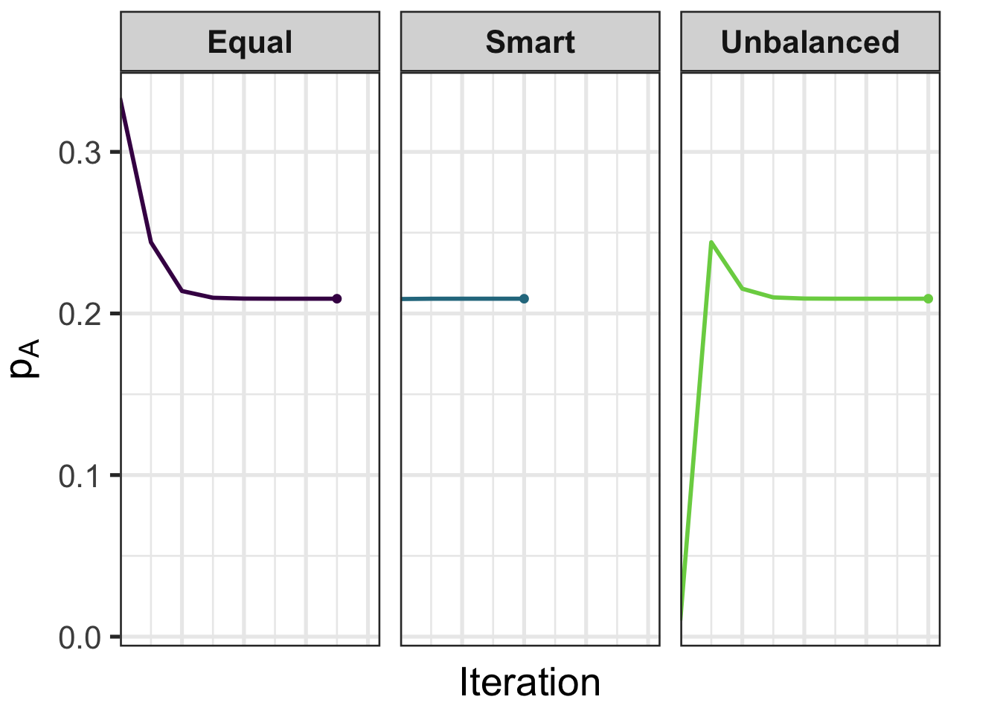

| Genotype | Phenotype | Observed Counts | Genotype Frequency |
|---|---|---|---|
| \(AA\) | \(A\) | \(n_A\) | \(p_A^2\) |
| \(AO\) | \(A\) | \(2 p_A p_O\) | |
| \(AB\) | \(AB\) | \(n_{AB}\) | \(2 p_A p_B\) |
| \(BB\) | \(B\) | \(n_B\) | \(p_B^2\) |
| \(BO\) | \(B\) | \(2 p_B p_O\) | |
| \(OO\) | \(O\) | \(n_O\) | \(p_O^2\) |
Lecture 03: Fitting Likelihoods, Linkage, and Association
PUBH 8878, Statistical Genetics
Review: Likelihood Function Basics
- Likelihood function: \(L(\boldsymbol{\theta} \mid \text{data}) = P(\text{data} \mid \boldsymbol{\theta})\)
- Maximum Likelihood Estimation (MLE)
- Simple one-parameter examples
However often direct MLE is not possible because
- Closed-form solution does not exist
- Missing or latent data
- High-dimensional or constrained parameter space leads to non-convex surface with multiple local maxima
Script:
“Let’s start by aligning on what likelihood means. We take the sampling model \(p(\text{data}\mid\theta)\) and, after we’ve observed the data, we view it as a function of the parameter \(\theta\). That function is the likelihood \(L(\theta)\). The MLE is simply the value of \(\theta\) that maximizes \(L\).
Two reminders that will be useful all semester: first, the invariance property—if \(\hat\theta\) maximizes \(L(\theta)\), then \(g(\hat\theta)\) maximizes the likelihood of \(g(\theta)\). Second, the curvature of the log-likelihood, via Fisher information, anticipates precision.
In practice, closed forms fail us for three common reasons: there’s no algebraic solution; there’s missing or latent data; or the parameter space is constrained or high-dimensional so the surface is bumpy. Today we’ll build the numerical toolkit that handles these realities.”
Agenda
- Optimization for MLE: Newton–Raphson, Gradient Descent, SGD
- EM algorithm: gene frequencies and incomplete data
- Linkage analysis: two-point, unknown phase EM, multipoint HMM
- Linkage disequilibrium (LD) and its measures (D, D’, r)
- Association: single-marker/haplotype tests and basic QC
Script:
“Here’s the plan. We’ll warm up with Newton–Raphson and first‑order methods—how to actually move on a likelihood surface. We’ll then introduce EM as a principled way to deal with missing or latent pieces, anchored by an ABO example.
Next, we pivot to linkage: first two‑point LOD, then an EM formulation for unknown phase, and finally the multipoint HMM perspective. We’ll connect that to LD, clarify \(D\), \(D'\) and \(r\), and finish with a single‑marker association demo and the QC that keeps results honest.”
Newton-Raphson Method for MLE
- General procedure to find \(x\) such that \(g(x) = 0\)
- Uses Taylor Expansion, for \(g(x)\) about a point \(x = a\):
\[\begin{align*} g(x) = g(a) &+ \frac{g'(a)(x-a)}{1!} + \frac{g''(a)(x-a)^2}{2!} \\ &+ ... + \frac{g^{(n)}(a)(x-a)^n}{n!} \end{align*}\]
Script:
“In MLE we set \(g(\theta)=\ell'(\theta)\), the score, and look for a root. Newton’s update is
\[ \theta{(t+1)}={(t)}-.\]
In multiple dimensions it’s \(\boldsymbol{\theta}^{(t+1)}=\boldsymbol{\theta}^{(t)}-\mathbf{H}^{-1}\mathbf{g}\), where \(\mathbf{g}\) is the gradient and \(\mathbf{H}\) the Hessian.
Three practical notes. First, Newton is quadratically convergent when you’re close to the solution—that’s why it’s fast. Second, guard against wild steps with damping or line search, and keep feasibility in mind if your parameter must lie on a simplex or in \([0,0.5]\). Third, if the Hessian misbehaves, use Fisher scoring (replace \(-\mathbf{H}\) with expected information) or a trust region.”
Gradient Descent
- First-order iterative optimization algorithm
- Does not rely on matrix inversions \(\longrightarrow\) better for high dimensional problems
- Visualizer from UCLA
Script:
“First‑order methods move along the steepest descent direction without ever inverting a matrix. That’s a superpower in high‑dimensional genetics models where Hessians are huge. The tradeoff: convergence is typically linear, not quadratic.
What matters in practice is the step size: constant steps are brittle; backtracking or scheduled decay is safer. Stochastic and mini‑batch variants are essential when your objective decomposes over people, markers, or families. The mental model is simple: noisy but cheap steps that converge ‘on average’.”
The EM Algorithm
- Expectation-Maximization Algorithm
- Key idea: transform an incomplete data problem into a complete data problem
\[ p\left(y \mid \theta \right) = \frac{p\left(y, z \mid \theta \right)}{p\left(z \mid y, \theta\right)} \]
Script:
“EM turns missingness into bookkeeping. We invent latent variables \(z\) so that the complete‑data log-likelihood \(\log p(y,z\mid\theta)\) is easy to maximize. At iterate \(t\):
- E‑step: compute \(Q(\theta\mid\theta^{(t)})=\mathbb{E}_{z\mid y,\theta^{(t)}}[\log p(y,z\mid\theta)]\).
- M‑step: update \(\theta^{(t+1)}=\arg\max_\theta Q(\theta\mid\theta^{(t)})\).
Why does it work? By Jensen’s inequality, EM monotonically increases the observed log-likelihood. The feel is ‘stable but sometimes slow’; we’ll flag accelerations like ECME and PX‑EM later.”
EM for Gene Frequencies
Script:
“Here’s the ABO mapping. The assumption is Hardy–Weinberg and random mating, so genotype frequencies are the usual \(p^2\), \(2pq\), \(q^2\). The ambiguity sits exactly in the A and B phenotypes: each collapses over two genotypes. EM will split those cells into expected counts using the current allele frequencies and then re‑estimate the frequencies as if those expected counts were observed.”
EM for Gene Frequencies
- We don’t know if \(n_A\) is from \(AA\) or \(AO\)! (And similarly for \(n_B\))
- However, given our data model, we can find values of \((\hat{p}_A, \hat{p}_B)\) via EM
Script:
“Think of each A phenotype as a soft label between AA and AO, with probabilities determined by the current \((p_A,p_O)\). Same story for B. That’s the essence of the E‑step.”
EM for Gene Frequencies
Start with initial \((p_A^{(0)}, p_B^{(0)})\) and set \(p_O^{(0)} = 1 - p_A^{(0)} - p_B^{(0)}\).
E-step: allocate ambiguous phenotype counts:
- \(A\) phenotype: \(\tilde n_{AA} = n_A \frac{(p_A^{(t)})^2}{(p_A^{(t)})^2 + 2 p_A^{(t)} p_O^{(t)}}\), \(\tilde n_{AO} = n_A \frac{2 p_A^{(t)} p_O^{(t)}}{(p_A^{(t)})^2 + 2 p_A^{(t)} p_O^{(t)}}\).
- \(B\) phenotype: \(\tilde n_{BB} = n_B \frac{(p_B^{(t)})^2}{(p_B^{(t)})^2 + 2 p_B^{(t)} p_O^{(t)}}\), \(\tilde n_{BO} = n_B \frac{2 p_B^{(t)} p_O^{(t)}}{(p_B^{(t)})^2 + 2 p_B^{(t)} p_O^{(t)}}\).
Script:
“These are just conditional probabilities. Given the person has phenotype A, what’s the chance they’re AA versus AO under the current \((p_A,p_O)\)? Multiply by \(n_A\) to get expected genotype counts \(\tilde n_{AA}\) and \(\tilde n_{AO}\). Do the same for B. That’s the E‑step.”
EM for Gene Frequencies
- M-step (with \(N\) total individuals):
- Iterate until parameter changes are below a tolerance.
Script:
“Now treat the expected genotype table as complete and recount alleles: two from each homozygote and one from each heterozygote, divided by \(2N\). That gives updated \((p_A,p_B,p_O)\). Iterate E and M until the changes are tiny and the observed log‑likelihood is no longer increasing.”
EM for Gene Frequencies
| Genotype | Phenotype | Observed Counts | Genotype Frequency |
|---|---|---|---|
| \(AA\) | \(A\) | \(725\) | \(p_A^2\) |
| \(AO\) | \(A\) | \(2 p_A p_O\) | |
| \(AB\) | \(AB\) | \(72\) | \(2 p_A p_B\) |
| \(BB\) | \(B\) | \(258\) | \(p_B^2\) |
| \(BO\) | \(B\) | \(2 p_B p_O\) | |
| \(OO\) | \(O\) | \(1073\) | \(p_O^2\) |
Script:
“With these sample counts—A = 725, AB = 72, B = 258, O = 1073—we can run EM. I’ll show convergence behavior next, and I want you to notice two things: the monotone increase in log‑likelihood and the impact of starting values.”
EM: Starting Values Matter
- Different initial \((p_A, p_B, p_O)\) can change speed (not the final MLE)
- Strategies:
- Equal: \((1/3, 1/3, 1/3)\)
- Unbalanced guess: \((0.01, 0.98, 0.01)\)
- Smart (use \(p_O^{(0)} = \sqrt{n_O/N}\), solve for \((p_A^{(0)}, p_B^{(0)})\) from \(2p_A p_B\))
- Tolerance of \(1 \times 10^{-6}\)
Script:
“The ‘smart start’ uses two near‑identities: \(n_O \approx N p_O^2\) gives \(p_O^{(0)}\approx\sqrt{n_O/N}\); then \(n_{AB}\approx 2N p_A p_B\) plus \(p_A+p_B=1-p_O^{(0)}\) gives a quadratic for \((p_A^{(0)},p_B^{(0)})\). This gets you close to the basin of attraction and trims iterations substantially. Equal and wild unbalanced starts are good stress tests.”
EM: Starting Values Matter
| Strategy | Iterations | \(\hat{p}_A\) | \(\hat{p}_B\) | \(\hat{p}_O\) |
|---|---|---|---|---|
| Equal | 7 | 0.209131 | 0.080801 | 0.710068 |
| Smart | 4 | 0.209131 | 0.080801 | 0.710068 |
| Unbalanced | 8 | 0.209131 | 0.080801 | 0.710068 |
Script:
“Read this table left to right. Each row is a starting strategy; the last three columns are the converged allele frequency estimates. The point is not that the answers differ—they don’t—but that the iterations column can vary a lot. You can buy free speed by initializing intelligently.”
EM Parameter Trajectories

Script:
“Here are the trajectories for \(p_A\). Different starts head toward the same fixed point, and the paths are smooth. If you ever see oscillation or jaggedness here, it’s a warning sign about numerical underflow or a bad update rule.”
When does EM fail?
- Non-identifiability / flat likelihood: Ridges in segregation or linkage models; EM wanders or stalls.
- Local maxima & starts: Multiple modes (e.g., mixture of penetrance classes); poor initialization traps EM.
- Boundary degeneracy: Rare allele/component weight driven to 0; variance or frequency estimates collapse.
- Model misspecification: Violated assumptions (e.g., Hardy-Weinberg, stratification) give misleading “convergence.”
Script:
“EM is not magic. If your model is not identifiable, EM will happily march along a ridge forever. If the likelihood is multimodal, bad starts can trap you. Near boundaries—think vanishing allele frequency—updates can collapse and stick. And if assumptions like HWE are wrong, EM will converge…to the wrong place. The antidotes are multiple starts, likelihood profiling, and stress‑testing the assumptions.”
Linkage vs Association Testing
- Linkage: Tracks co-segregation of markers and traits within families to map disease genes.
- Null hypothesis: no linkage (independent assortment), \(\theta = 0.5\).
- Association: Tests for correlation between variants and traits in populations to pinpoint causal loci.
- Null hypothesis: no association (e.g., \(\beta=0\) or OR=1).
Script:
“Two mapping mindsets. Linkage works within families, asks whether a trait and a marker co‑segregate more than chance, and summarizes evidence on a centimorgan scale with LOD curves. It’s robust to population structure. Association works across unrelateds, tests regression coefficients or odds ratios, and resolves at kilobase scale, but is sensitive to confounding. We need both lenses.”
Two-Point Linkage: Terms
- Independent assortment (recall): when loci are unlinked, transmissions are independent and the chance a crossover separates them is \(\theta=0.5\) (Mendel’s Second Law).
- Informative transmission/meiosis: a parent \(\to\) child transmission where the transmitting parent is heterozygous at the loci of interest and the genotypes allow us to tell whether a crossover occurred.
- Example: parent \(Aa/Bb\) transmits \(AB\) or \(ab\) (nonrecombinant) vs \(Ab\) or \(aB\) (recombinant).
Script:
“An informative meiosis is one where you can tell whether a crossover happened. If the transmitting parent is not heterozygous at both loci, you can’t tell—so that meiosis doesn’t contribute information about \(\theta\).”
Two-Point Linkage: Terms
- Recombinant fraction \(\theta\): the probability that a crossover occurs between two loci in a single meiosis; \(0 \le \theta \le 0.5\).
- Nonrecombinant transmission: the child receives an allele combination that matches one of the transmitting parent’s original allele pairs (no crossover between the loci).
- Recombinant transmission: the child receives a new combination relative to the transmitting parent’s original pair (a crossover occurred between the loci).
Script:
“Operationally, nonrecombinants copy one of the parental haplotypes; recombinants mix them. Our complete‑data likelihoods will be binomial in the counts of these two outcomes.”
Two-Point Linkage: Repulsion vs Coupling

Script:
“Phase matters. In coupling, \(AB/ab\), nonrecombinants are \(\{AB,ab\}\) and recombinants are \(\{Ab,aB\}\). In repulsion, \(Ab/aB\), those roles flip. When phase is unknown, we’ll treat it as latent and estimate a posterior weight on the two configurations.”
Two-Point Linkage: Direct Counting
Count \(R\) recombinants and \(NR\) nonrecombinants; total informative \(I=R+NR\).
Point estimate: \(\hat{\theta}=R/I\).
LOD from counts (vs. independence at \(\theta=0.5\)):
\[ \mathrm{LOD}(\theta) = \log_{10}\!\left\{ \frac{\theta^{R} (1-\theta)^{NR}}{0.5^{I}} \right\} \]
- This is a likelihood ratio test!
Script:
“In the simplest case, count recombinants \(R\) and informatives \(I\), and compute \(\hat\theta=R/I\). The LOD is a base‑10 log likelihood ratio against \(\theta=0.5\). The curve peaks at \(\hat\theta\) and tells you where the evidence lies.”
Worked Example: Direct Counting LOD
- Suppose \(I=40\) informative meioses with \(R=12\) recombinants.
- MLE \(\hat{\theta}=R/I=12/40=0.3\).
- For \(\theta=0.3\)
\[ \mathrm{LOD}(0.3) = \log_{10}\!\left\{ \frac{0.3^{12} \cdot 0.7^{28}}{0.5^{40}} \right\}. \]
Script:
“With \(R=12\) out of \(I=40\), \(\hat\theta=0.30\). Plugging into the LOD gives about \(1.43\), i.e., roughly 27:1 odds for linkage at the MLE. That’s suggestive, but below the classical \(LOD\ge 3\) bar. Modern practice often uses permutation‑based thresholds instead of a hard rule.”
Worked Example: Direct Counting LOD
R <- 12
N <- 40
thetahat <- R / N
lod <- log10((thetahat^R * (1 - thetahat)^(N - R)) / (0.5^N))
lod[1] 1.429410^lod[1] 26.87819- Maximize \(\mathrm{LOD}(\theta)\) over \(\theta \in [0,0.5]\) to estimate the recombination fraction; \(LOD \ge 3\) and \(\leq -2\) are classic heuristics (context-dependent).
Script:
“This code reproduces the arithmetic: LOD around 1.43, odds around 27:1. The maximizer of the LOD is exactly \(R/I\). The \(\pm\) thresholds are heuristics, not laws—use context and proper genome‑wide calibration.”
Worked Example: Direct Counting LOD
- Under \(H_0:\theta=0.5\) (a boundary point), \(D = 2\ln(10)\cdot \mathrm{LOD}(\hat\theta)\) has the mixture limit \(\tfrac{1}{2}\chi^2_0 + \tfrac{1}{2}\chi^2_1\); thus \(p = \tfrac{1}{2}\, \Pr(\chi^2_1 \ge D)\).
D <- 2 * log(10) * lod
pval <- 0.5 * pchisq(D, df = 1, lower.tail = FALSE)
pval[1] 0.005148931Script:
“At the boundary \(\theta=0.5\), Wilks’ theorem gives a mixture null: half the mass at zero degrees of freedom and half at one. Concretely, compute \(D=2\ln(10)\cdot \mathrm{LOD}\) and take \(p=\tfrac{1}{2}\Pr(\chi^2_1\ge D)\). This is the right conversion for two‑point tests against \(\theta=0.5\).”
Two-Point Linkage: EM with Unknown Phase
- Transmitting parent: double het \(Aa/Bb\) with unknown phase.
- Mate: Aa/bb (heterozygous at \(A\), homozygous at \(B\)).
- Observed per child: two-locus genotypes \((A\text{-genotype}, B\text{-genotype})\).
Script:
“Now a case where EM is actually necessary. The mate is bb, so the child’s \(B\) allele comes entirely from the transmitting parent. That’s helpful. But the mate is Aa at \(A\), so whenever a child is Aa, we can’t tell whether the transmitting parent contributed \(A\) or \(a\). Those are ambiguous transmissions between two haplotypes—exactly the kind of soft labeling EM was built for.”
Two-Point Linkage: EM with Unknown Phase
- Missing-data view: the parental phase (coupling vs repulsion) is not observed. We make it a complete-data problem by introducing a weight \(w\in[0,1]\) that blends the two phase-specific models.
- Model (given recombination fraction \(\theta\)):
- Coupling: \(P(\text{NR})=1-\theta\), \(P(\text{R})=\theta\) (split equally across the two categories).
- Repulsion: \(P(\text{NR})=\theta\), \(P(\text{R})=1-\theta\).
Script:
“Think of phase as a two‑component latent class: coupling vs repulsion. We’ll carry a single scalar, \(w\), the posterior weight on coupling. Under coupling, nonrecombinants are more likely by \(1-\theta\); under repulsion the roles swap. EM will update \(w\) and then update \(\theta\) from weighted recombinant counts.”
Two-Point Linkage: EM with Unknown Phase
E-step (update the phase weight)
\[ w = \frac{(1-\theta^{(t)})^{\,n_{\text{NR}}}\,(\theta^{(t)})^{\,n_{\text{R}}}} {(1-\theta^{(t)})^{\,n_{\text{NR}}}\,(\theta^{(t)})^{\,n_{\text{R}}} + (\theta^{(t)})^{\,n_{\text{NR}}}\,(1-\theta^{(t)})^{\,n_{\text{R}}}} \]
and use \(1-w\) as the weight on the repulsion configuration.
Script:
“This is the posterior weight on coupling: likelihood under coupling divided by the sum of likelihoods under both phases. In code, use logs and a log‑sum‑exp trick to avoid underflow if \(n_{\text{NR}}\) or \(n_{\text{R}}\) is large.”
M-step (update \(\theta\))
\[\begin{align*} \theta^{(t+1)} &= \frac{\text{(weighted recombinants)}}{N} = \frac{w\,n_{\text{R}} + (1-w)\,n_{\text{NR}}}{N}. \end{align*}\]
Script:
“The M‑step is ‘recombinants over informatives’, but with a twist: we average the recombinant counts under coupling and repulsion using the current \(w\). That keeps the intuition intact.”
From Two-Point EM to Multipoint
- Same objective: estimate recombination while marginalizing over latent transmissions/phase under current \(\theta\).
- E-step engine: compute required state weights via Elston–Stewart peeling (pedigrees) or Lander–Green forward–backward (marker HMM) when you have multiple markers and missing genotypes.
- Quantities needed: \(\mathbb E[\#\,\text{recombinants between adjacent markers}]\) and \(\mathbb E[\#\,\text{informative transmissions}]\) under current map.
- Use in practice: either (a) plug these expectations into an EM-style update, or (b) more commonly, scan positions to build a LOD curve and report peak and 1-LOD interval.
Script:
“In multipoint linkage, the hidden object is the inheritance state along the chromosome. The forward–backward algorithm gives us posterior state probabilities; from those we compute expected recombinant counts between markers and assemble LOD curves across the map. It’s the same EM logic, just powered by an HMM.”
Multipoint Linkage (HMM)
- Markers along a chromosome define an HMM over inheritance states; adjacent recombination rates drive transitions.
- Combine penetrance with the marker HMM to compute \(L(\theta)\) efficiently as you slide along the map (forward–backward yields the needed state probabilities even with missing phase/genotypes).
- Pros: more information than two-point; better localization. Cons: requires a genetic map and error modeling.
Script:
“Two practical cautions: include a genotyping‑error model—even a small error rate flattens LODs if ignored—and consider sex‑specific maps or interference if your study demands it. Otherwise, the HMM machinery scales cleanly.”
Missing-Data EM in Linkage
- Complete data: informative meioses labeled as recombinant/nonrecombinant; incomplete data: untyped genotypes/phase.
- E-step: compute \(E[\text{\# recombinants}]\) and \(\mathrm E[\text{\# informative meioses}]\) given current \(\theta^{(t)}\) via peeling/HMM.
- M-step: \(\displaystyle \theta^{(t+1)} = \frac{\mathrm E[R\mid\text{data},\theta^{(t)}]}{\mathrm E[I\mid\text{data},\theta^{(t)}]}\).
- Iterate across \(\theta\) grid to produce a LOD curve; maximize or report support interval.
Script:
“This slide distills the recipe: compute expected recombinants and informatives under the current map, then update \(\theta\) as their ratio. In practice we report the LOD curve and a 1‑LOD support interval rather than a single point estimate.”
Practical Issues in Linkage
- Model specification: penetrance, phenocopy, allele frequencies; misspecification can distort LOD.
- Marker selection: highly polymorphic markers increase information; account for sex-specific recombination if needed.
- Computational trade-offs: many markers and large pedigrees require approximations or pruning; consider parametric vs nonparametric linkage.
Script:
“Linkage analyses are only as good as their trait model. Probe sensitivity to penetrance and phenocopy. Use polymorphic markers to maximize information, and thin dense SNPs if LD bloats state spaces. For large pedigrees, Elston–Stewart pruning is your friend.”
Linkage Disequilibrium
- Let alleles at two markers be denoted \(A, a\) and \(B, b\)
- Define allele frequencies by \(P_A, P_a, P_B, P_b\)
- Define frequencies of haplotypes as \(P_{AB}, P_{Ab}, P_{aB}, P_{ab}\)
- Define linkage equilibrium as independence in the \(2 \times 2\) table
- For example, \(P_{AB} = P_A \times P_B\)
Script:
“LD is simply statistical dependence between alleles on the same haplotype. Think forces: drift and finite population size create dependence, recombination erodes it, selection and admixture can inflate it.”
Linkage Disequilibrium
- Define the LD coefficient as \(D\)
\[D = p_{AB} - p_A p_B\]
- What are we looking at here?
Script:
“Algebraically, \(D\) is the covariance between the allele indicators on a random haplotype. If \(D>0\), \(AB\) is over‑represented relative to independence; if \(D<0\), it’s under‑represented.”
Linkage Disequilibrium
- Define the LD coefficient as \(D\)
\[D = p_{AB} - p_A p_B\]
- Note that
- \(\operatorname{E}[A] = p_A, \operatorname{E}[B] = p_B\)
- \(\operatorname{E}[AB] = p_{AB}\)
- \(\operatorname{Cov}(A, B) = \operatorname{E}[AB] - \operatorname{E}[A]\operatorname{E}[B]\)
Script:
“Formalizing that intuition: let \(A,B\in\{0,1\}\) indicate the presence of alleles on a haplotype. Then \(D=\operatorname{Cov}(A,B)\). This is why correlation \(r\) shows up naturally on the next slide.”
Linkage Disequilibrium
- \(D\), or \(\operatorname{Cov}(A, B)\), is scale-dependent
- Normalized measures:
- \(D' = D / D_{\max}\), where \(D_{\max} = \min(p_A p_b, p_a p_B)\) if \(D > 0\)
- Pearson correlation:
\[\begin{align} r &= \frac{\operatorname{Cov}(A, B)}{\sqrt{\operatorname{Var}(A) \operatorname{Var}(B)}} \\ &= \frac{D}{\sqrt{p_A(1 - p_A) p_B(1 - p_B)}} \end{align}\]
Script:
“\(D\) depends on allele frequencies, so we normalize. Two popular choices: \(D'\) and \(r\). For association power, \(r\)—and really \(r^2\)—matters most because it directly scales the noncentrality parameter: effect sizes at a tag SNP are attenuated by about \(r\) relative to the causal.”
Goal of Association & LD Link
- Goal: test the null of no effect (e.g., \(\beta=0\) or OR\(=1\)) to identify regions harboring causal variants.
- We test markers, not necessarily the causal variant. If a marker has nonzero LD (correlation \(r\)) with a causal variant, its association test can detect signal from that causal.
- Stronger \(|r|\) implies a stronger expected signal at the marker; if \(r\approx 0\), the marker carries no information about that causal.
- Sign matters: \(r<0\) flips the observed effect direction at the marker relative to the causal.
- In practice, nearby markers within LD blocks show clustered p-values and similar effect signs.
Script:
“Here’s the bridge: association tests fire at markers. If a marker correlates with a causal by \(r\), the observed effect is roughly \(r\) times the causal effect, and power scales with \(r^2\). That’s why p‑values cluster within LD blocks and why effect signs can flip if \(r<0\).”
Single-Marker Association: Core Test (Linear)
- Linear trait: \(Y=\alpha+\beta G+\gamma^T C+\varepsilon\); test \(H_0{:}\,\beta=0\).
- Genotype encodings: additive (0/1/2) or genotypic (AA/Aa/aa); include dominance to test non-additivity.
- Binary outcomes (case–control) and logistic models will be covered later.
Script:
“Regression 101 with genetics details. Code genotypes additively unless biology suggests dominance or recessivity; add a dominance term if you want to test non‑additivity. Always include relevant covariates—sex, age, and PCs for ancestry—because stratification can fake associations.”
Basic QC Pipeline (Variant-level)
- Call rate/missingness (e.g., variant missingness < 2%).
- Hardy–Weinberg equilibrium in controls (e.g., P > 1e−6), mindful of true deviations.
- Minor allele frequency threshold (e.g., MAF ≥ 0.01 unless rare-variant methods used).
- Differential missingness across case/control; strand/allele checks.
Script:
“QC is prevention. Missingness filters remove low‑quality sites; HWE in controls flags genotyping problems; MAF thresholds avoid unstable estimates unless you’re using rare‑variant methods. Don’t forget strand and allele checks—mismatches there create phantom effects.”
Basic QC Pipeline (Sample-level)
- Sample call rate; sex checks from X chr; heterozygosity outliers.
- Relatedness/duplicates via IBD; ancestry via PCA; remove outliers or adjust with PCs.
- Duplicates/cryptic relatedness: retain one per pair or use mixed models.
Script:
“At the sample level, verify sex against X‑chromosome heterozygosity, look for heterozygosity outliers, and identify relatives with IBD. Use PCA to quantify ancestry and either exclude outliers or adjust downstream. Mixed models help with relatedness, but don’t use them as an excuse to skip QC.”
Summary & Key Takeaways
- Likelihood optimization: Newton–Raphson (score/Hessian), Gradient Descent/SGD (scalable), and EM (latent-data) are core tools.
- EM for ABO gene frequencies: initialization affects speed; log-likelihood increases monotonically until convergence.
- Linkage: two-point LOD and unknown phase via EM; multipoint mapping framed as an HMM for efficient inference with missing data.
- LD basics: r and r^2 quantify correlation between markers and explain why nearby markers can show similar association signals when a causal variant is unobserved
Script:
“Take‑home messages. Newton and first‑order methods are your optimization workhorses. EM turns missingness into a tractable expectation–maximization cycle and increases the log‑likelihood monotonically. Linkage is about family transmissions; association is about population correlation. And \(r^2\) is the currency that converts LD into expected association signal.”
Hands-On: Lab 03 (Applied)
- Implement ABO EM and compare starts; plot log-likelihood gap.
- Two-point linkage: LOD grid search + EM with unknown phase.
- Two-SNP haplotype EM; compute LD (D, r^2).
- Mini association demo: linear regression + HWE QC in controls.
See labs/unsolved/lab-03.R for the scaffold (with TODOs) and labs/solved/lab-03.R for a worked solution.
Script:
“For the lab: keep a log of starting values and attained log‑likelihoods—this is good hygiene with EM. In the two‑point EM, verify that ambiguous transmissions are being split sensibly as \(\theta\) and \(w\) update. In the haplotype EM, watch for boundary estimates at very low MAFs. And in the association mini‑demo, confirm that including PCs meaningfully reduces ancestry structure before you trust the p‑values.”